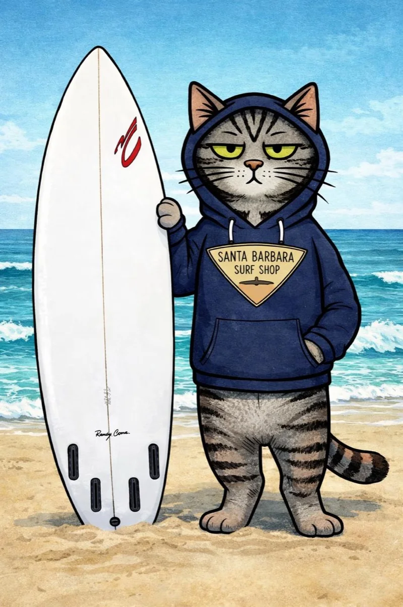

The story
Made by ocean people. And one very unimpressed cat.
RipCat is built in Santa Barbara by Ben Williamson — a surfer and developer — with his daughter Odette and their cat Rip, a tabby who has seen bigger waves and is not impressed. (Kitten apprentice BlueJazz remains convinced the ocean is a giant water bowl.)
Rip's board is shaped by Randy Cone, who has been shaping Ben's boards for decades. The hoodie is from Santa Barbara Surf Shop — surfboards by Yater since 1962. Real shop, real shaper, real cat.
"Know the tide. Read the water. Go at the right time."
No venture money, no growth team, no dark patterns. Just an app the three of them actually use every morning — and keep making better.